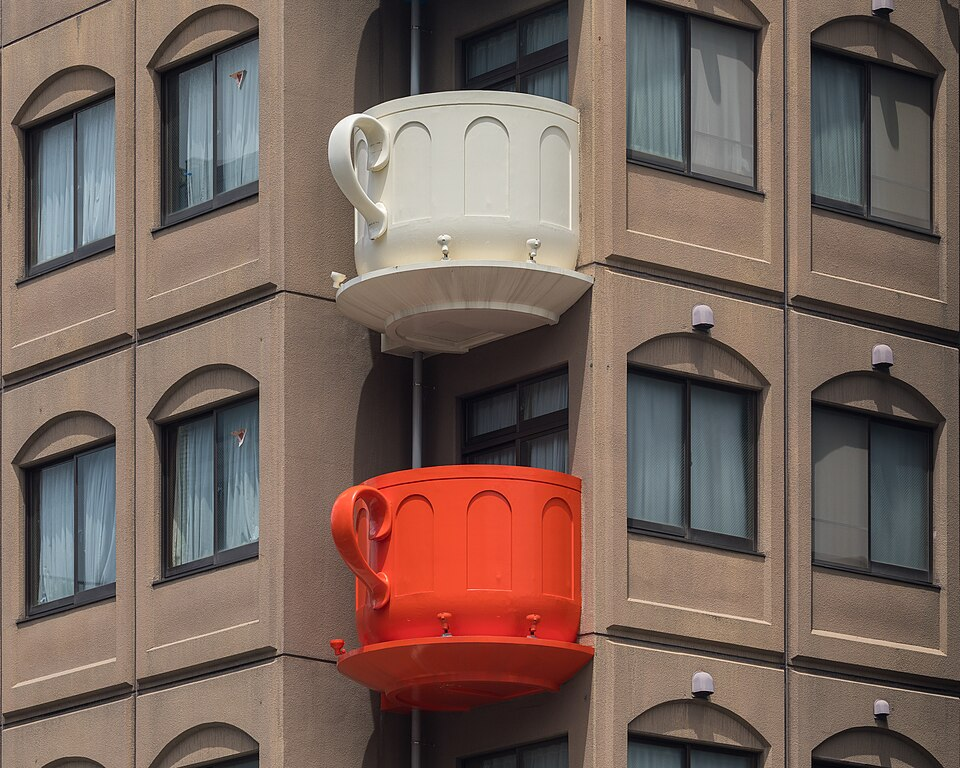

Kappabashi - «кухонный город»
Улица для поваров: ножи, посуда, муляжи еды

_a_sunny_morning_in_Tokyo_Japan.jpg){kind=link}


- Улица ~800 м между Asakusa и Ueno, больше 170 специализированных магазинов: ножи, посуда, оборудование, вывески, пластиковые муляжи блюд для витрин (по-японски «sampuru»).
- Началось около 1912 года с нескольких лавок подержанной утвари. По одной из версий, сюда сдавали домашние вещи молодые люди, которым нужны были деньги на соседний «весёлый» квартал Yoshiwara.
- Название пишут как «плащ-дождевик», но символ улицы - каппа, водяной из японских сказок: статуи каппы стоят по всей улице. Рядом храм Kappa-dera, где каппе подносят огурцы.
- Главный ориентир - голова повара на крыше магазина посуды Niimi и его балконы в форме кофейных чашек.
- Магазины в основном оптовые, но продают и в розницу.
Срез 13.10.2026, 12:50 JST (Kappabashi убран по просьбе). Погода: Open-Meteo. Поезда: Yahoo!乗換案内 на 13.10. Часы: официальные сайты Senso-ji, Ueno Toshogu, Tokyo National Museum, National Museum of Western Art. Факты: Wikipedia (en/ja). Карта: Esri. Фото: Wikimedia Commons, тап - крупно, Esc / × / тап - закрыть.